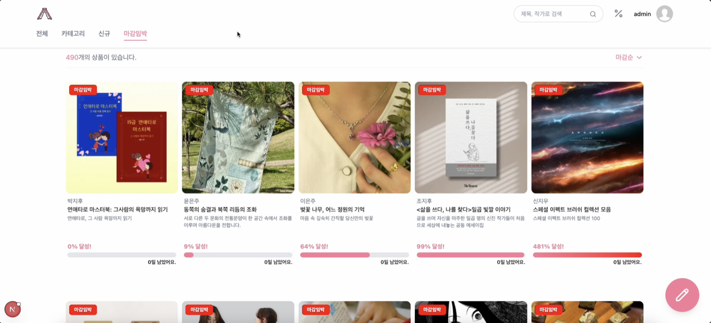
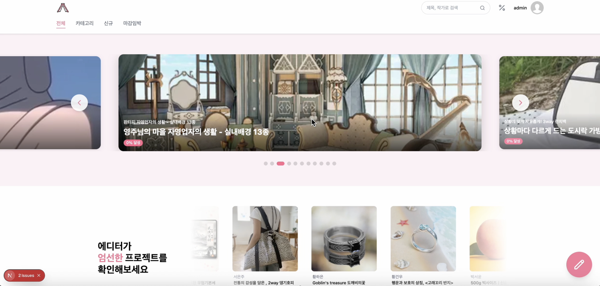
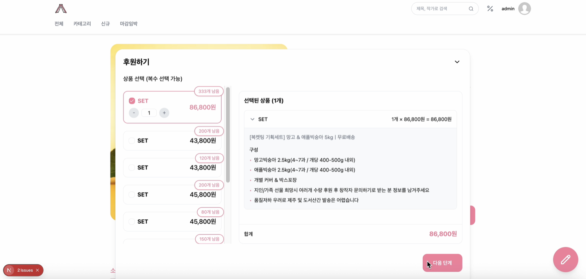
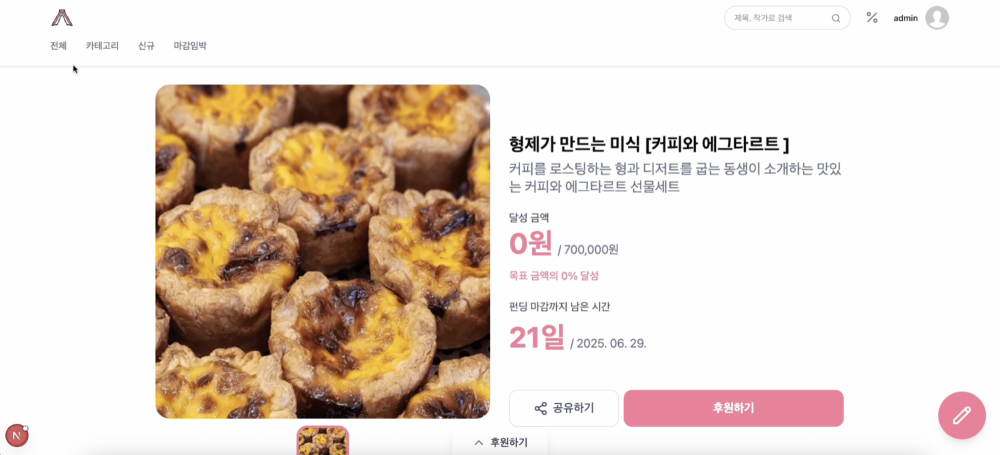

대표2025.04 – 2025.06 · goorm PROFECT 풀스택 2기
크라우드 펀딩 E-commerce 플랫폼
ERD 설계부터 메인 도메인·이미지 처리·FCM 알림까지 백엔드 전반을 구현. 알림 로직을 비동기·논블로킹으로 전환해 성능을 끌어올렸습니다.
- +250%초당 요청
- -12%CPU 사용률
- +50%TPS
- Java
- Spring Boot
- MySQL
- QueryDSL
- FCM
- JMeter



상품·유저·썸네일 등 여러 도메인의 이미지를 중간 테이블로 통합 관리하도록 설계하고, 실시간 알림에서 스레드 풀 고갈 문제를 비동기·논블로킹 전환과 풀 튜닝으로 해결했습니다. 실제 WAS 환경에서 JMeter 부하 테스트로 성능을 검증했습니다.
역할
- ERD 설계부터 메인 도메인 서비스, 이미지 처리, FCM 알림 구현
- 스레드 풀 튜닝 및 알림 전송 로직의 비동기·논블로킹 전환
- 상품·이미지 도메인 로직 구현
성과
- 실시간 알림 초당 최대 요청 수 250% 증가, CPU 12% 감소, TPS 50% 향상
- 실제 WAS 환경 부하 테스트를 통한 성능 검증
- AI 도구 활용으로 반복 코드 자동화 및 문제 해결 속도 향상
협업
- Swagger·Notion 기반 API 명세 및 협업 문서 체계화
- GitHub Actions 기반 CI/CD 환경 구성 참여
- Java
- Spring Boot
- MySQL
- QueryDSL
- FCM
- JMeter
- Docker
- GitHub Actions